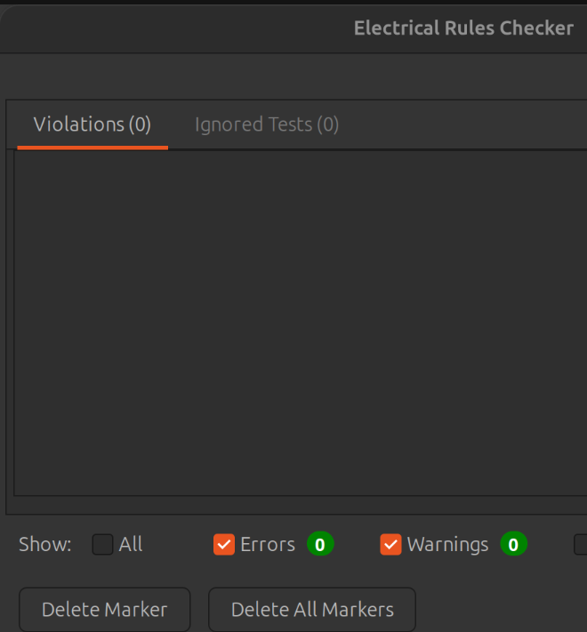

Home / Projects / Parcel-Tracking System / Gateway PCB
Gateway: ESP32-S3 BLE + ESP-NOW Bridge, 4-Layer PCB
A four-layer ESP32-S3 board that bridges a phone to the beacons over BLE and ESP-NOW, delivered with schematic, layout and production files.

- Layers
- 4
- Module
- ESP32-S3-WROOM-1
- Wireless
- BLE + ESP-NOW
- Charger
- BQ24074
- Buttons
- 3 tactile
- Battery
- 1S LiPo, protected
- Tool
- KiCad
- Scope
- Schematic + PCB
01The brief
The second device in the client's parcel-tracking system: a gateway the driver carries. It receives commands from a phone over Bluetooth LE and relays them to many beacons over ESP-NOW.
It needed to be compact, battery powered, rechargeable from USB-C or a dock, and easy to flash and troubleshoot during development.
02My role
- Schematic capture and component selection around the ESP32-S3-WROOM-1
- Power, charging and battery design
- 4-layer placement and routing, including the antenna keep-out
- Schematic review rounds with the client
- ERC and DRC verification, and the manufacturing package
03Design decisions
- One chip, two radios. The ESP32-S3 handles BLE to the phone and ESP-NOW to the beacons, so no separate radio is needed.
- Charging and power path. A BQ24074 charges a single internal LiPo from USB-C or from two dock contacts on the back, and a TPS63802 buck-boost with a 0.47 µH inductor produces the 3.3 V rail.
- Protected battery. The design uses an internal 3.7 V, 2000 mAh pack with its own protection circuit, stated explicitly in the schematic and BOM.
- Controls. Three tactile buttons: a multifunction button, BOOT and RESET. An RGB LED serves as the power and status indicator.
- Easy bring-up. Ten labelled pads along one edge (TX, RX, BOOT, GND, 3V3, RESET, 5V_IN, BUZ, RGB_D, BAT+) allow flashing and probing.
- RF. The module antenna sits at the board edge inside a marked keep-out, away from the battery and the buzzer.
04Where client review improved the design
The client reviewed the schematic closely before layout began. The review led to these corrections:
- The first RGB LED was swapped for a WS2812B-2020-V6, which suits the 3.3 V supply.
- A missing inductor footprint was assigned: a Murata DFE201612E-R47M=P2.
- The multifunction button footprint was corrected from a slide switch to a tactile switch.
- A duplicate battery connector was removed.
- Battery protection was made explicit.
- ERC checks that had been ignored were re-enabled, ending at 0 errors, 0 warnings and 0 ignored tests.
- Separate BOOT and RESET buttons were added for development.
05PCB design


06Verification
KiCad's DRC reports no violations and no unconnected items, and ERC reports no violations and no ignored tests.


07Delivered files
- Gateway schematic + PDF
- Editable KiCad project
- PCB layout, 4 layers
- BOM
- Gerber files
- Drill files
- CPL / pick-and-place
08Project result
A compact four-layer gateway PCB with a reviewed schematic, clean ERC and DRC, and a full set of production files. It pairs with the Beacon in the same product.